Timeline of Indian Festivals
Festivals by Month
January
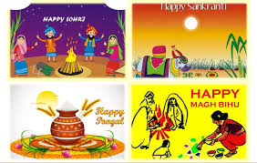
Pongal – A harvest festival celebrated in Tamil Nadu as a thanksgiving to nature.
February
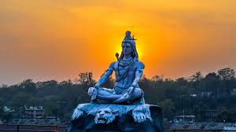
Maha Shivratri – Dedicated to Lord Shiva, this night-long celebration includes prayers and fasting.
March
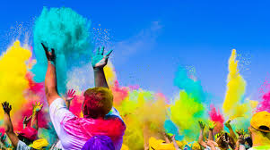
Holi – The festival of colors, celebrated with joy, music, and vibrant powders.
April
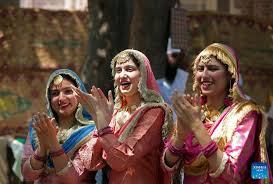
Baisakhi – A harvest festival especially celebrated in Punjab and by Sikh communities.
May
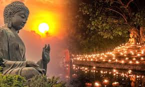
Buddha Purnima – Commemorates the birth, enlightenment, and death of Gautama Buddha.
June
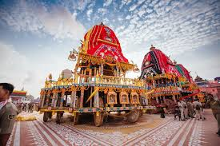
Rath Yatra – A grand chariot procession held in Puri, Odisha, in honor of Lord Jagannath.
July
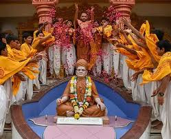
Guru Purnima – A day to honor spiritual and academic teachers with gratitude and respect.
August
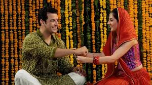
Raksha Bandhan – Celebrates the bond between brothers and sisters, marked by tying a rakhi and giving gifts.
September
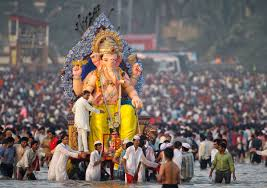
Ganesh Chaturthi – Marks the birth of Lord Ganesha, celebrated with processions and idol immersions.
October
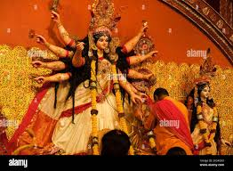
Navratri & Dussehra – Celebrated over nine nights for Goddess Durga and culminating with Dussehra, the triumph of good over evil.
November
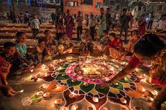
Diwali – The festival of lights, symbolizing the return of Lord Rama to Ayodhya and victory of light over darkness.
December
Christmas – Celebrates the birth of Jesus Christ with joy, music, decorations, and gatherings.